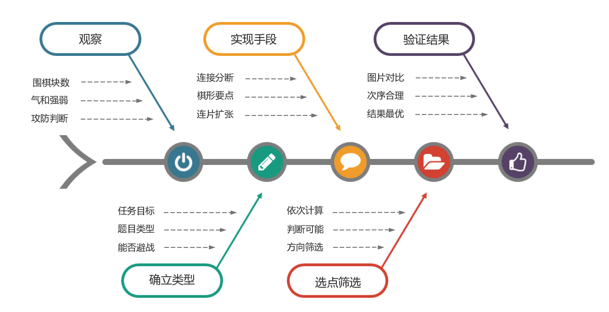
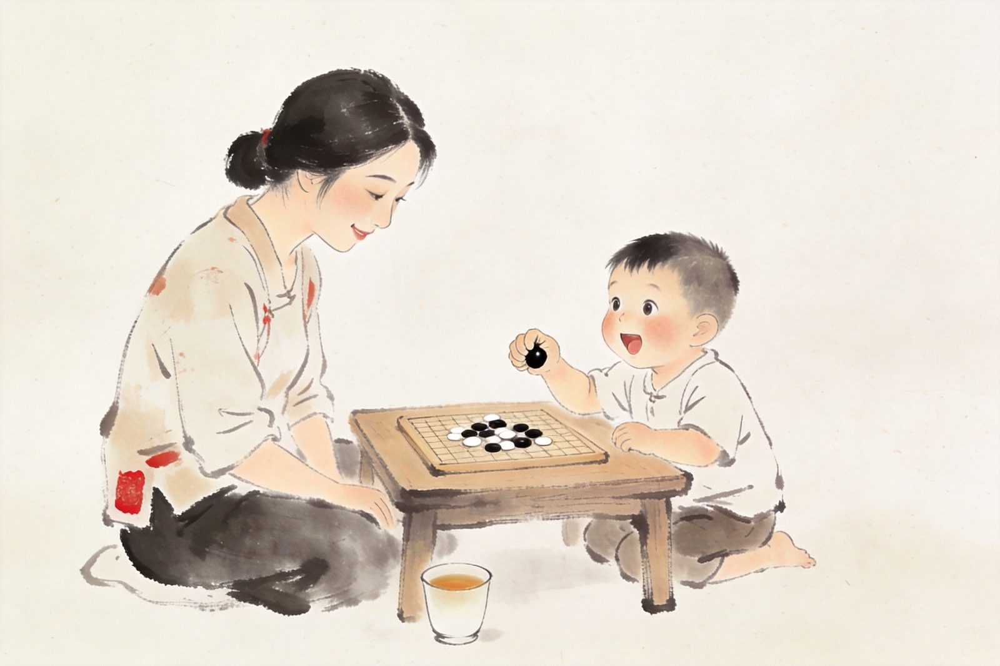
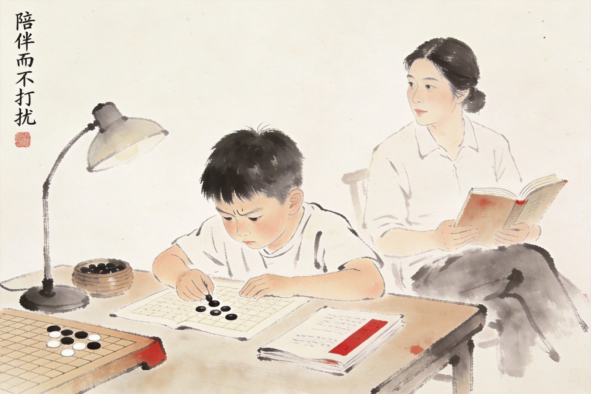
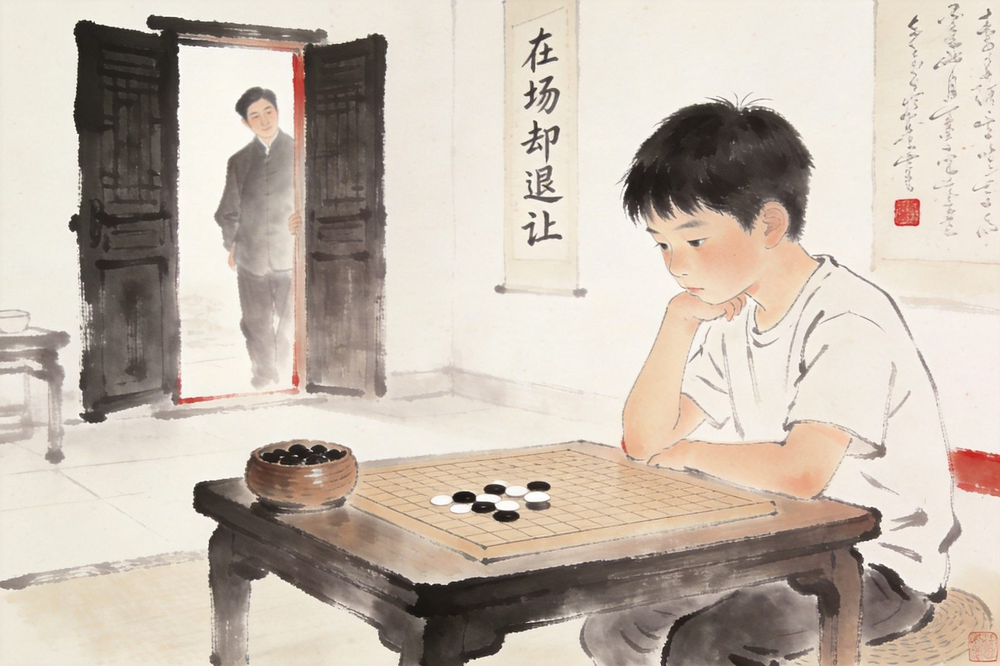

LUO BO GAN · MISSION
让围棋，成为每个普通孩子
都能享受的智力教育
2026 下半年 · 分享课表
我叫萝卜干。这些年，我做的事情就一件——把围棋这件事讲清楚：让普通孩子学得进去、家长教得明白、老师上得轻松。
我画过一张全国围棋机构都在用的思维导图——把围棋教学的逻辑结构整理出来，让教学不再依赖个人天赋。
我也写过 4 本围棋教育手册（教师 / 校长 / 家长成长 / 家庭教育），把这些年踩过的坑、想明白的事，留在纸上。
在以下平台分享日常：
抖音 / 视频号 / B 站 · 萝卜干聊围棋教育
备课没思路、孩子不爱听、家长不理解、续费总卡壳——
把教学逻辑梳清楚，把和家长的沟通话术做扎实，上课轻松，留人不难。
招生靠口碑、续费靠服务、老师靠成长——
一个人也能干，三个人也能管。把小机构的运营底盘搭起来，把人留下来。
孩子学不进去、不爱下棋、输了就哭、考级焦虑——
不是棋的问题，是陪伴方式的问题。用对方法，围棋会成为最好的亲子项目。
所有项目均长期开放，加微信咨询入群方式。
长期开放
教师系统性能力训练营。每期围绕一个核心专题，集中打磨备课逻辑、课堂节奏、家长沟通、续班话术。适合刚入行 1-3 年的老师，以及想告别野路子教学的独立老师。
每周四 · 长期
面向萝卜围棋圈成员的每周体系化分享。本季度主题：围棋老师如何做好自媒体；下季度主题：家校沟通与招生宣传。每期一个小切口，长期滚动更新。
每周三 / 周四早 · 长期
以《围棋教师成长手册》为主干，二十次课系统串讲从教学理念到课堂落地的全流程。每次课配套课程回放、教学笔记、教学 PPT，加入即可反复复用。
长期开放 · 按专题排课
面向野狐 10 级到 3 段棋友的专项训练营，四大模块——围棋布局、中盘战斗、打入专题、官子提升，按专题轮转，逐一打透实战短板。
长期开放
面向少儿围棋家长的长期交流群。日常围绕孩子学棋进度、家中陪练、升级冲段节奏、赛事信息展开。每周一次固定分享教育心得，无广告、无强制打卡。
长期开放 · 预约制
针对个体棋友的深度陪跑。集中解决卡段瓶颈、思维盲点、赛前突击等具体问题。每次 45 分钟，面向 5 岁到成人，可试听一次再决定是否长期。
长期开放 · 按专题排期
面向孩子的短期专项训练营。围绕死活手筋、布局感觉、吃子技巧、基本官子四大专题轮转开营，每期 6-8 次课，适合 15 级到 3 级的孩子按短板选营。
这几年沉淀下来的两件事：一套家校共育四书，一份2025 版围棋思维导图。都还在持续打磨。
围绕围棋教育与家庭教育写成的四卷手册，分别面向老师、校长、家长与家庭日常。
写给每一位认真的围棋老师，从教学理念到课堂落地的系统方法。
写给同行校长的一本书，聊招生、教研、留存与团队的实际做法。
陪孩子学棋的家长真心话，把家长最容易踩的坑一次讲清楚。
用一盘棋，养出会思考的孩子——把围棋当成家庭教育的一面镜子。
从教学体系、启蒙入门、棋力提升到家庭教育，把这些年琢磨出来的东西画成一张张图。点击可放大查看。
围棋教学的整体框架、教学体系、知识清单与计算体系。
布局、中盘、死活、冲段，覆盖不同水平的进阶重点。
家长如何陪孩子学棋，兼顾成长与家庭沟通。
四千年，围棋不是一门游戏，而是一整套东方哲学。这里从四个门推开看：历史、故事、典籍、人物。持续更新，慢慢挖。
壹 · 时间
从上古神话走来，围棋在中国活了五千年。走一遍它的时间线。
0 篇 · 点击进入 →
贰 · 记忆
五千年里，围棋不只是棋，它是无数故事的容器。挑几个我常讲的。
0 则 · 点击进入 →
叁 · 传承
两千年来中国人为围棋写过的书，浩如烟海。挑几本最重要的说说。
0 部 · 点击进入 →
肆 · 人物
把围棋推向今天的，是一批批具体的人。他们的故事比棋谱更精彩。
0 位 · 点击进入 →
本栏目会持续更新，之后会加入更多典故、名局解读与围棋礼仪。有想让我讲的题目，欢迎去留言板留言。
这些文字是我多年在教学一线沉淀下来的教学思路和方法论。分为三个方面：怎么把围棋技术教给刚开始学棋的孩子、多年上课积累的一些案例，以及新入行的老师如何规划自己的围棋生涯、实现稳步成长。
围棋练习，"做得多"未必有效，"做得对"才是关键。这份小册子把多年在教学一线积累下来的 练棋建议整理成 6 条基础注意事项 + 4 个可以互动的小工具， 希望能给家长、学员和新入行的老师，一份可以温和照做的参考。

陪孩子学围棋的这几年，不是匀速前进的——它会经过三个味道完全不一样的阶段。这份建议摘自《围棋家长成长手册》第三章，把启蒙期、级位期、段位期一段一段拆开讲，希望能给每一位陪孩子走这条路的家长，一份可以温和照做的参考。
孩子学围棋的这几年，棋盘上的内容在变，孩子的脑子在变，您要扮演的角色也得跟着变。
最常见的错位，是孩子已经走到第二阶段，家长还停留在第一阶段的"我陪着你玩"；或者孩子才在第一阶段，家长已经按第三阶段的"该自己独立思考"在要求他。前一种会让孩子觉得家长太黏太轻飘飘，后一种会把孩子推到一个他接不住的位置。
下面按三个阶段 × 五个板块展开：这个阶段的孩子是什么样、您可以怎么做、内向和外向孩子分别怎么处理、小提醒、以及李老师和萝卜老师在这个阶段最想对家长说的话。

5~7 岁，以具体形象思维为主，听不懂"势"，但对"小怪兽被吃掉"这种拟人化说法理解力惊人。单次有效注意力 5~10 分钟，中间走神是正常的。会反复忘掉规则、赢了就乐疯输了就大哭，也会突然蹦出一句让您惊呆的话。请先放心：这不是您家孩子的问题，是这个年纪本来就这样。
同样一句话、同样一道题，对内向和外向孩子要换两种用法。
课上不举手不代表没听懂，是处理速度慢半拍。回家重做不重讲——直接把题摆出来让他自己再摆一次。出门前 20 分钟预告"我们要去围棋课了"，别在棋室门口逼他和老师同学打招呼。赢棋以后在车里、家里夸，不要当众大声夸——他会退缩。
课上举手最积极、讲得最热闹，但享受的是"被看见"不是"想明白"。落子前加一个深呼吸小仪式，每盘棋后让他当小老师讲一遍。家庭围棋日刻意给他设计"表演环节"（给爷爷奶奶演示怎么吃子），舞台需求被满足了，他在课上就不会用插嘴抢答去抢老师的注意力。
启蒙期的家长其实只要做一件事——让孩子下完课走出教室的时候，是笑着的。剩下的，慢慢来都来得及。—— 李老师
启蒙期最重要的，不是孩子学会了多少规则，是他在围棋这件事上，找到了一个"我说了算"的感觉。—— 萝卜老师手记

8~10 岁，开始具备 2~3 步逻辑推理，能听懂"气""目""厚薄"，但要在具体棋形上才反应过来。单次注意力 15~25 分钟。开始有"我的棋风"——爱屠龙、爱围空、爱搅劫。会输给比自己弱的孩子并因此崩溃。段位不涨是家长的头号焦虑——这是整个学棋路上最长、最磨人的一段。
级位期是内向和外向孩子分化最明显的阶段，家长要用完全不同的方式来陪。
警惕"内伤型情绪"——输了不哭不闹，回家自己默默不说话，情绪压在心里没散掉。主动给他"非语言陪伴"的出口：散步、买冰棒、聊棋以外的事，比追问"你怎么了"有用得多。请老师多排"够一够能赢"的对手，少排"能轻松赢"的。赛前一周降低压力，不再加练。
警惕"虚高的自我评价"——讲得自信但不一定真懂，网棋胜率比线下高一大截。每天网棋不超过 2 局（即使他求着还要下）；每盘复盘让他自己说，他说着说着会自己发现"这手没想清楚"。赛前一周反而要保持"还在练"的紧张感，完全歇着他会手生。
段位是结果，能力是因。您天天浇水的应该是根，不是天天去看花开了没。—— 李老师
级位期的家长，往往不是做得太少，是话太多。把一些话憋回去，比说出来更有用。—— 萝卜老师手记

10~14 岁，抽象推理 + 全局视野初步具备，能听懂"味道""效率""急所"并主动应用。单次注意力 45 分钟~2 小时。开始有自己的棋观，会反驳您、反驳老师。也开始出现半年到一年的高原期。学业和围棋的平衡是段位期的头号焦虑。段位阶段是孩子是否会"终身保留围棋"的分水岭。
段位期的孩子已经会藏心事，家长最重要的能力是"读懂他不说的话"。
心里有很多话但不说——对棋、对老师、对家长都有判断，却全憋着。学会读非语言信号：突然不愿意去棋室、比赛回来不说话，都可能不是您以为的原因。少问、多陪，用散步、开车、睡前关灯这些低压力场合等他自己开口。主动问他研究的定式（"那个定式最近研究得怎么样了"），比问十句"今天怎么样"都管用——他要的是"被认真对待"。
自信和自我怀疑反复横跳——今天觉得马上冲段，明天觉得不是这块料。您要当"稳定的低音线"：他嗨时您不跟着嗨过头，他塌时您不跟着塌下来。青春期社交圈会挤占练棋时间，不要指责"你怎么现在都不学了"——帮他在围棋圈里建立同龄人社交，一起下棋、报队赛，让围棋也变成"和朋友一起做的事"。
段位期的家长，真正的本事不是"陪着孩子学"，是"问出孩子的真实想法，并且尊重它"。这是孩子能在围棋这条路上走远的根本。—— 萝卜老师手记
下一次拿不准"现在该用哪种姿态"的时候，可以一眼扫过去对照。
| 维度 | 启蒙期 | 级位期 | 段位期 |
|---|---|---|---|
| 关键词 | 玩中学，守护兴趣 | 耐心引导，培养习惯 | 支持与放手，见证成长 |
| 典型年龄 | 5~7 岁 | 8~10 岁 | 10~14 岁 |
| 思维特征 | 具体形象思维 | 初步逻辑推理（2~3 步） | 抽象推理 + 全局视野 |
| 单次注意力 | 5~10 分钟 | 15~25 分钟 | 45 分钟 ~ 2 小时 |
| 典型节奏 | 单课 10~15 分钟"游戏" | 每天 15 分钟死活题 | 自主练习 + 自主打谱 |
| 家长头号焦虑 | "他怎么学得比别人慢" | 段位停滞 | 学业 vs 围棋如何平衡 |
| 家长该做 | 配合 + 童话 + 鼓励过程 | 陪练 + 复盘三句话 + 读懂停滞 | 后勤 + 边界 + 24 小时缓冲 |
| 最忌讳 | 灌输抽象概念 / 过早段位赛 | 把段位变成家庭 KPI | 继续用级位期方式介入 |
| 与老师沟通 | 两周一次问"陪练什么" | 每月一次问"卡在哪、原因" | 关键节点深谈（专业 / 阶段调整） |
| 比赛跟队 | 全程陪 | 全程陪但坐在视线之外 | 按需跟（早送晚接） |
| 复盘方式 | 不强制复盘 | 复盘三句话 | 赛后 24 小时再开口 |
| 内向孩子 | 重做不重讲 / 出门 20 分钟预告 | 安全出口 / 排"够一够"的对手 | 少问多陪 / 散步车上聊 |
| 外向孩子 | 慢仪式 / 设"表演环节" | 控网棋时长 / 让他自己复盘 | 当稳定的低音线 / 建围棋同龄人圈 |
如果把三个阶段画成一条线，家长角色其实是这样变化的。
| 阶段 | 家长角色 | 一句话姿态 |
|---|---|---|
| 启蒙期 | 玩伴 | 他玩，您也玩 |
| 级位期 | 陪练员 + 情绪容器 | 他练，您陪；他哭，您接 |
| 段位期 | 观众 + 后勤 | 他下，您看；他比赛，您备好早餐 |
这三个角色之间没有明确的分界线。最聪明的家长，是会在孩子还在级位期的时候，就开始预演段位期的姿态——稍微往后退一步、稍微少说一句、稍微多忍一忍。这种"提前一步退场"的智慧，让孩子在每一个阶段的过渡上，都走得比同龄人更顺。
愿您在三个阶段都找到自己舒服的位置。愿您和孩子，在每一个阶段，都笑得出来。
—— 摘编自《围棋家长成长手册》第三章 · 萝卜老师教学思路会持续沉淀，教学故事也会不断更新。想看什么话题，欢迎去留言板留言。
面向已合作的老师、机构和家长开放的会员板块。这里存放的是围棋启蒙阶段最实用的教师成长资料、课堂把控经验、游戏化教法与围棋故事——需要账号 + 密码才能进入。
未获得账号？请通过微信 yxwq0909联系萝卜干老师申请。
登录后 30 天内自动免登，可在"退出登录"或清除浏览器缓存后重置。
围棋教育里，最难的不是技术，是"人"这一面。这里两套 30 题自评，帮你把自己在孩子学棋 / 教学状态里的位置照一照镜子。做完会给你一张段位认证证书，可以保存分享。
这套题面向孩子在学围棋、正在学、或者考虑让孩子学的家长。它不测围棋水平，测的是你作为家长的教育理念、期望管理、陪伴方式、教育视野四个维度。
提示：本测评为萝卜干个人教育理念评估工具，结果和证书代表教育认知度参考，不代表围棋段位。
围棋教学配套的思维训练工具——注意力、记忆力、抑制力、空间感，都是围棋对局背后的底层能力。这里精选七类经典脑力训练项目，孩子学棋之余可以顺手一试，老师也可以拿来做课前热身、课间放松。
本训练室为公益开放；成绩仅保存在本地浏览器，不上传服务器。每个工具介绍页均标注参考来源，数值综合国内外常见测评参考区间与平台教研经验，仅作训练进步的横向趋势参考，不用于筛查或诊断。
每周挑一个真实问题聊聊，也欢迎你在下方直接留言。
本周问题
你心里"优秀围棋老师"的标准是什么？欢迎在下方留言板留下你的看法。
第 001 期
明明会做题，一到实战就"下崩"，问题出在哪？
会做题≠会实战；下崩是学棋孩子的必经阶段；家长最容易踩的坑，是一崩就要求"再复盘一次"，反而让孩子越来越怕下棋。
有什么想聊的、想问的、想吐槽的，都可以在这里留下。我会一条条看，回得慢但会回。
扫码加微信
yxwq0909
加微信时，建议注明：
① 你是老师 / 校长 / 家长
② 想了解哪个项目
方便我更快回到你的问题。
加载中……